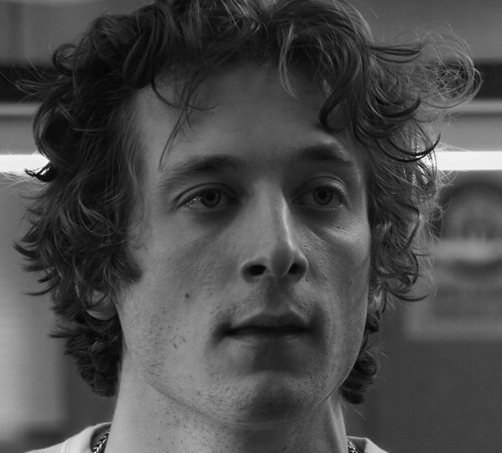
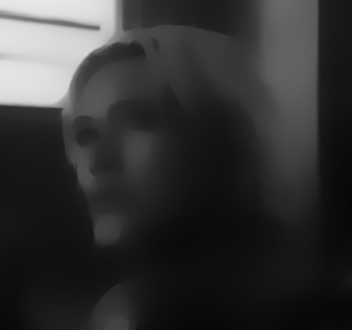
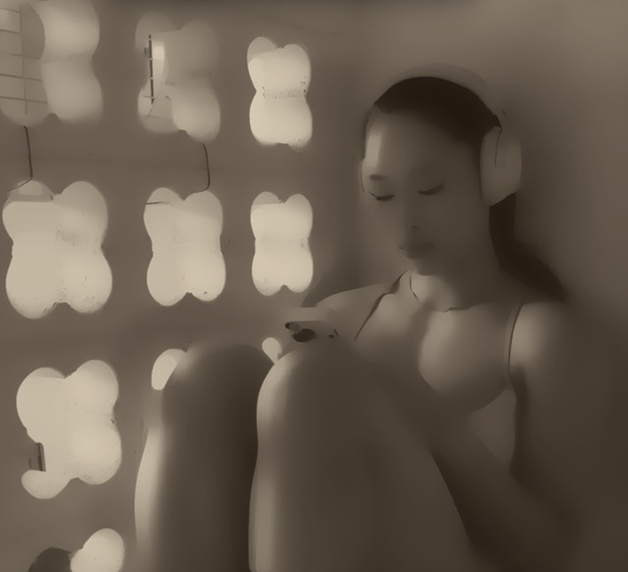
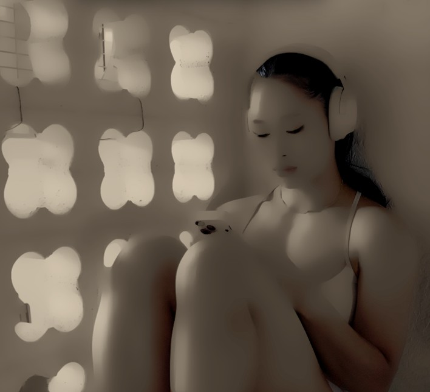
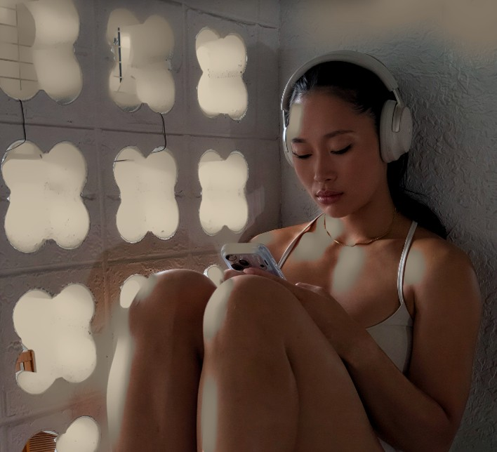
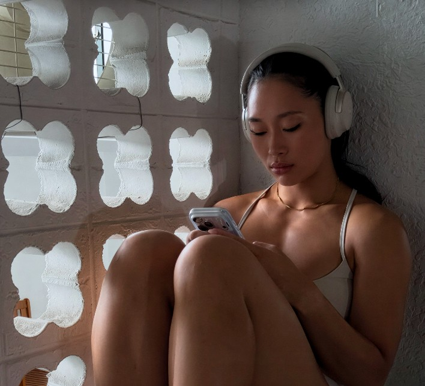

Artists' reference analyzerby MemoreeArt
Study your reference the way a trained eye does.
Measure it, see its values, mix its colours and check your drawing against it.
Everything free until 11 Feb 2027
Out 30 Oct 2026 · Web, Android, Windows & Mac · one email, unsubscribe anytime
What it does
Everything you check by eye, laid over the photo.
01/ Measure
Measure anything
Dividers, grids and perspective guides over your photo, so you can see where everything should land.
All platforms · drawing & painting
02/ Values
See the values
Turn any photo into 2 to 9 flat values or big simple shapes, so you know what to block in first.
All platforms · drawing & painting
03/ Check my drawing
Score your drawing
Photograph your drawing, tap a few landmarks, and see how close you got and exactly what's off.
Android · uses the phone camera
04/ Colour
Mix what you see
Point at any colour and get a mixing recipe made from the paints you actually own.
Android & desktop · painting mode
05/ Isolate
Find it everywhere
Pick a colour, a range of values, warm or cool, or vivid or muted. Everything else greys out, so you see every place it appears.
All platforms · drawing & painting
06/ No detail
See the big forms
Smooths away skin texture, pores and stray hairs but keeps the values, gradients and dark accents. You see the big shapes of light and shadow to draw first, without the detail pulling your eye.
All platforms · drawing mode

07/ Shading
Read the light
See the photo as big shapes of light and shadow, then add the detail back one band at a time. You learn to see form, not copy detail.
1 / Shading
Big shapes of light and shadow, no detail. The shadow shape is what makes a head look solid, so get it right first.
2 / Darks
The darkest accents come back: strands of hair, lashes, the corner of the mouth. They anchor the drawing.
3 / Lights
The features and halftones in the light return. Detail lives in the light, so that is where your effort goes.
4 / Brights
The brightest highlights go on last. They are small and few, and saving them for the end keeps them clean.
All platforms · drawing mode

08/ Underpainting
Paint it in stages
Your photo becomes a one-colour underpainting. Bring back darks, halftones, midtones and highlights one at a time and paint each in turn.
1 / Underpainting
The whole photo in one warm tone. You see the pattern of light and shadow before colour gets in the way.
2 / Darks
The darkest colours come back first: hair and the deepest shadows. Block these in and the picture already holds together.
3 / Halftones
The colours where the form turns from light into shadow. This is where a painting gets its sense of volume.
4 / Midtones
The big lit areas fill in: skin and wall. Most of your colour mixing happens here, one band at a time.
5 / Highlights
The brightest lights go on last, like the glowing window. With every band on, you are back to the photo.
All platforms · painting mode




Also: Block Out · Squint · Perspective grids · Golden spiral · Camera check · Session timer
Does it help?
Same reference. Same hour.
Image 06 · Before
Your drawing of a portrait done the usual way, no tools. Photographed flat, even light, same framing as the after.
Still image · 6:7 (1200 × 1400) · JPG
Without RefStudy
Image 07 · After
The same reference drawn again using dividers and value steps. Same paper, same time limit, same lighting as the before.
Still image · 6:7 (1200 × 1400) · JPG
With RefStudy
Who it's for
Pencil to oil. First sketch to hundredth painting.
- Pencil
- Charcoal
- Ink
- Oil
- Acrylic
- Gouache
- Watercolour
- Digital
Get RefStudy
Free until 11 February 2027.
Out 30 October 2026. Every tool works on Android, Windows and Mac. Check my drawing and Camera check use the phone camera, so they're on Android.
Questions
Before you download.
Is it on iPhone or iPad?
Not yet. RefStudy is on Android, Windows and Mac. Get the launch email and you'll hear first when that changes.
Are my photos uploaded anywhere?
No. Everything is processed on your own device, and projects are saved as files on your device.
Does it work offline?
Yes. The Android and desktop apps work without an internet connection.
Is it for drawing or painting?
Both. When you open a photo you choose "I'm drawing" (black and white, with value tools) or "I'm painting" (colour tools), and the app shows the tools for that.
What happens after 11 February?
Most tools stay free. A few advanced ones will become part of a paid full version, and the price will be announced well before then.
Launch day